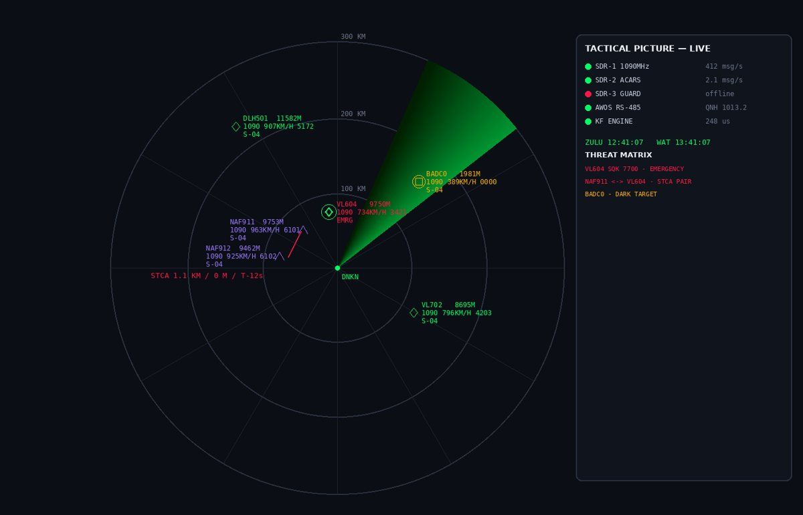
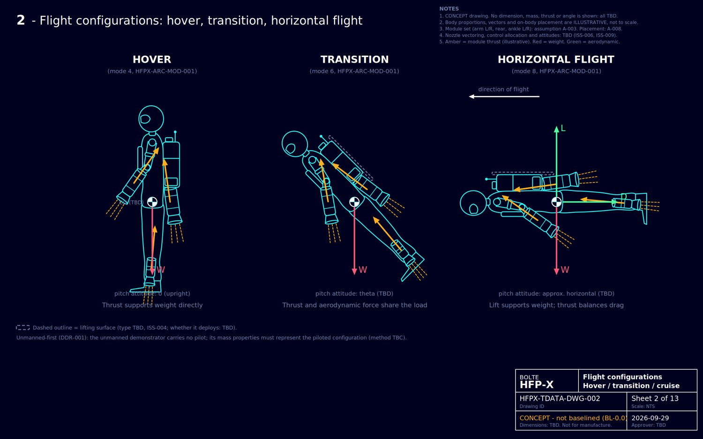

Six programmes, one engineering discipline.
From a working software prototype to long-horizon research, each programme states what it addresses, where it stands and where it goes next.
AeroPulse-NGFlagshipTactical Radar and Airspace Surveillance Engine Offline airspace surveillance on low-cost radio hardware. Software prototype built Aerospace, defence, computing
- The need
- Secondary aerodromes and tactical sites often lack affordable low-altitude surveillance. Imported systems are costly, depend on connectivity and power, and are hard to maintain locally.
- The approach
- An offline surveillance workstation that runs on low-cost software-defined radio and a standard PC. It receives aircraft transponder and ACARS messages, tracks aircraft, and raises conflict, emergency and geofence alerts. It is advisory: an operator decides.
- Current status
- The software prototype is built and runs on simulated radio signals. We are waiting on the hardware components for real-time testing with live signals.
Progress through the BOLTE model
- Problem
- Idea
- Research
- Engineering
- Prototype
- Testing
- Improvement
- Deployment
- Impact

Roadmap
- NowObtain the radio hardware for real-time testing with live signals.
- NextLive-signal testing, then a field trial at a secondary aerodrome or tactical site.
- ThenPublish the trial report and prove a second use case.
- LaterFirst pilot and deployment to secondary aerodromes and tactical users.
ASOLArmory Shift and Ordnance Log Armoury custody and ordnance logging without paper ledgers. Designed on paper Defence logistics
- The need
- Armoury custody still runs on paper ledgers. Check-in and check-out are slow to audit, single-custodian handovers leave accountability gaps, and unfit personnel can draw equipment unchecked.
- The approach
- An offline armoury desk with barcode and RFID check-in and out, enforced dual-custodian shift handovers, a fitness-for-duty check before release, and an encrypted local database.
- Current status
- The system is designed and planned on paper: architecture, data model and interfaces are written. The working prototype is the next step.
Progress through the BOLTE model
- Problem
- Idea
- Research
- Engineering
- Prototype
- Testing
- Improvement
- Deployment
- Impact
Roadmap
- NowWalk through the real armoury workflow with domain advisers and map today's paper forms to the design.
- NextBuild a working prototype with simulated scanners, after the first prototype's trial report and a resource review.
- ThenField pilot with real barcode and RFID hardware at an armoury, audited by an independent count.
- LaterHarden, add multi-desk support, and ship a deployable kit with training material.
DAFVDefense Asset and Firmware Verifier Proof that hardware and firmware are what they claim to be. Designed on paper Cybersecurity, industrial
- The need
- Depots receive hardware and firmware with no local way to prove where it came from. Tampered or swapped binaries can be deployed without anyone noticing.
- The approach
- An offline audit station at the receiving dock. It reads a device image, checks it against a signed manifest, and binds the result to the asset. A person accepts or rejects it; it never flashes anything automatically.
- Current status
- Designed on paper: architecture, data model and interfaces are written. The lab prototype is the next step.
Progress through the BOLTE model
- Problem
- Idea
- Research
- Engineering
- Prototype
- Testing
- Improvement
- Deployment
- Impact
Roadmap
- NowReview the design with domain advisers and line up parts for a lab setup.
- NextLab prototype that checks device images against signed manifests, after the first prototype's trial report and a resource review.
- ThenConnect to real device interfaces and asset tags.
- LaterPilot at a depot receiving dock.
C4ISR-DFETactical C4ISR Data Fusion Engine One offline picture for dispersed units on weak links. Designed on paper Communications, computing and AI
- The need
- Vehicles and bunkers lack a single offline picture. Aircraft, drone, radio-bearing and GPS tracks arrive in separate tools and are lost when links degrade.
- The approach
- A command dashboard that merges those tracks onto an offline map and shares compact updates between units over lossy links, with store-and-forward so nothing is dropped.
- Current status
- Designed on paper: architecture, data model and interfaces are written, reusing lessons from the AeroPulse-NG prototype. The lab prototype is the next step.
Progress through the BOLTE model
- Problem
- Idea
- Research
- Engineering
- Prototype
- Testing
- Improvement
- Deployment
- Impact
Roadmap
- NowReview the design with domain advisers and prepare simulated sensor feeds.
- NextLab fusion of several sensor feeds into one known picture, after the first prototype's trial report and a resource review.
- ThenTwo-station mesh that stays in sync through link loss.
- LaterPilot in a vehicle or bunker.
TBR-HSTactical Biometric Radar and Health System A microwave motion sensor that tracks people on a minimap, for frontline and search-and-rescue use. Designed, beyond concept Defence, search and rescue, sensing
- The need
- At the frontline, a squad cannot see who is moving behind a wall or around a corner. In search and rescue, finding people trapped behind obstacles costs critical time.
- The approach
- A motion sensor that uses microwave signals, which the human body absorbs, to detect movement of nearby people, including through barriers. It plots them on a screen like a minimap in a video game, with signed identity tokens to tell friendly from unknown. Tracking personnel health with wearable vitals is an added feature.
- Current status
- Designed, beyond concept: the architecture, signal-processing chain, data model and interfaces are written. Bench simulation is the next step.
Progress through the BOLTE model
- Problem
- Idea
- Research
- Engineering
- Prototype
- Testing
- Improvement
- Deployment
- Impact
Roadmap
- NowDefine the safety and ethics review, and list the parts for a test rig using physical phantoms.
- NextBench simulation of the signal chain through to the minimap display, with no people involved.
- ThenLab sensor bring-up on phantoms and obstacles.
- LaterControlled pilot, only after safety and ethics review and both founders' sign-off.
HFP-XHuman Flight Platform A body-worn, jet-powered vertical-lift flight platform for a pilot. Designed, beyond documentation Aerospace, transportation
- The aim
- A Nigerian-engineered platform that takes off vertically, hovers, transitions to forward flight, cruises and lands, with independent recovery for defined failures.
- The approach
- Distributed jet modules, fly-by-wire control, a smart helmet display and emergency recovery, developed through a 34-volume documentation set and a drawing set. An unmanned demonstrator comes first. Human flight comes only after unmanned hover, transition and cruise pass evidence gates.
- Current status
- The schematics and architecture are designed. Performance values are still to be confirmed, and no hardware is built or flown.
Progress through the BOLTE model
- Problem
- Idea
- Research
- Engineering
- Prototype
- Testing
- Improvement
- Deployment
- Impact

Roadmap
- NowClose out the requirements and architecture review, and confirm the design values.
- NextSimulation and ground rigs for the subsystems, then the unmanned demonstrator.
- ThenUnmanned hover, transition and cruise, passing each evidence gate in turn.
- LaterControlled human flight, only after every gate is passed.
Select a programme to see its progress through the BOLTE model and its roadmap.
Rules every programme follows.
Nigerian fit
Designed around power, connectivity, climate and the engineers who will maintain it.
Honest maturity
Each programme states its technology readiness level. A concept is labelled a concept.
Standards named, not claimed
We design against recognised standards and never claim a certification we do not hold.
Safety before deployment
Testing and documentation come first. Anything involving people goes through safety and ethics review.
Cost and maintainability
Commodity hardware, permissive licences, and software that Nigerian engineers can support.
Gated growth
Concepts stay on paper until the first prototype has its trial report and we have reviewed our resources.
Where we are going.
Prove
Demonstrate our first software prototype, secure the hardware for live testing, and put governance in place.
Validate
Live-signal testing and a field trial, a published trial report and a second use case.
Build capability
Prototyping facility, manufacturing partner, incorporation, IP filings and a first pilot.
Scale
National deployment and partnerships with universities, industry and government.
Want to evaluate or support a programme?
We welcome pilot sites, technical reviewers and research partners.